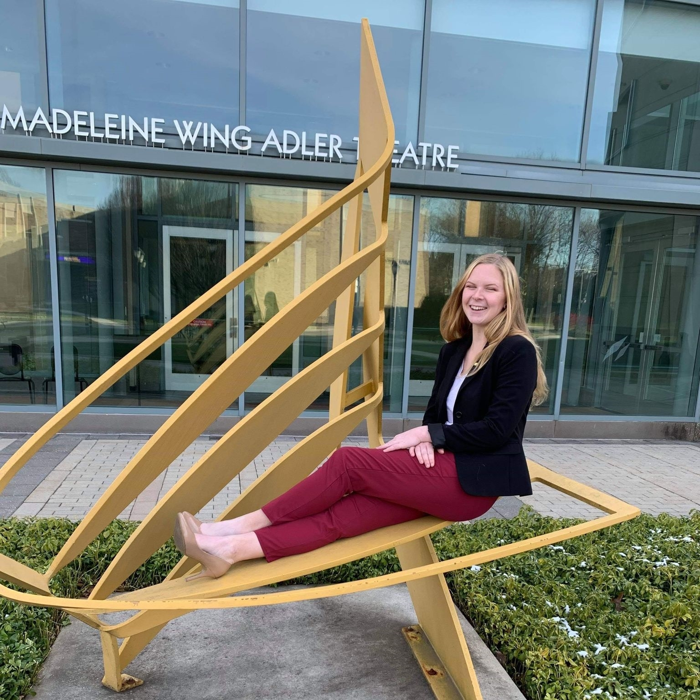

Bailey Karst.
Musician, Educator, and Advocate for Youth
About Me
I'm Bailey, a musician, teacher, and advocate for young people in the classroom and the community. I graduated from West Chester University in 2022 with a Bachelor's of Music in Music Education, and earned a Minor in Youth Empowerment and Urban Studies. Along with music and education, I have a particular interest in science, and even worked as a pharmacy technician through most of college.
I'm a sister of Sigma Alpha Iota, an International Fraternity for Women in Music, an avid dog lover, a bunny mom, cyclist, coffee enthusiast, and a band geek at heart. So much so that I spent eight years on the field with various drum corps groups, and four years teaching area high school marching bands in Southeastern PA.
Projects
Here are some of the projects I have completed with my classmates as a part of my Seminar in Youth led Media Class in fulfillment of my YES Minor at WCU. I learned a ton discussing these issues and putting these projects together.
Reflections from FYP
Below are some journal entries I have made about my experience at FYP this semester.
Through my YES 301 class, I have had the pleasure of working with Fab Youth Philly to better understand the needs of youth, and to be more involved with youth work in the area. Fab Youth Philly’s goals are to inspire, innovate, and connect youth programs with what they need to not only survive, but thrive. Fab Youth Philly also has it’s own programs that they operate, and I had the pleasure of observing the Safety Captains program almost every week.
In this program, teens are employed to help make their community a safer place. However, this looks different than a typical first job that a teen has. Often times teens first jobs are fast food, or another type of job where they are typically being told what to do most of the time. Fab Youth Philly appears to flip that narrative, giving young people the freedom and empowerment to enact positive change in their community by determining factors that may make everyone in the community safer. Fab Youth Philly is trauma informed, and passes this onto their employees, teaching their teens how to be trauma informed, and make decisions that will help their community thrive.
Everyone hypes up the commute into Philly, I76 traffic, but it’s not too bad, and it’s been a ride that I’ve grown accustomed to and look forward to each week. It’s been nice watching the season change from winter to spring as I drive home with differing levels of natural light at the end of the day. I get off at Girard, and I’m tempted to go to the zoo every time I see the entrance. Philly is so lively, and I’ve really enjoyed the time I spent exploring the area that my field placement at FYP is located. We are right on Drexel’s campus, there's lots of activity, restaurants, stores, and people around. I think these things are important to note because communities are exactly what we talk about in the Safety Captain program. Things like positive community assets, like small family stores, restaurants, laundromats, and other places that can be a safe haven for kids to hang out and exist without facing violence that can sometimes be on the streets.
“Youth Friendly” areas are something that Fab Youth Philly aims to develop, places in the community such as businesses or stores that do not require parents to be with teens under 18, they can come and go as they please and use their business as shelter or a safe place to work, play, or hang out. I think these things are really important, because even as a youth in a suburban, white area, teens can be seen as rowdy or unruly when unaccompanied, which is obviously a harmful stereotype and can leave kids to hang out in dangerous situations with no adult supervision whatsoever. For example, a pizza shop could operate as a teen safe area, offering up space for kids to hang out, do homework, or eat without feeling like they are not supposed to be there. Teens and kids are people too, I feel like sometimes society forgets that, but programs like FYP make me feel like we are moving closer and closer to society as a whole realizing that.
Contact Me
West Chester, PA
Email: BK906121@wcupa.edu
Let's get in touch. Send me a message: